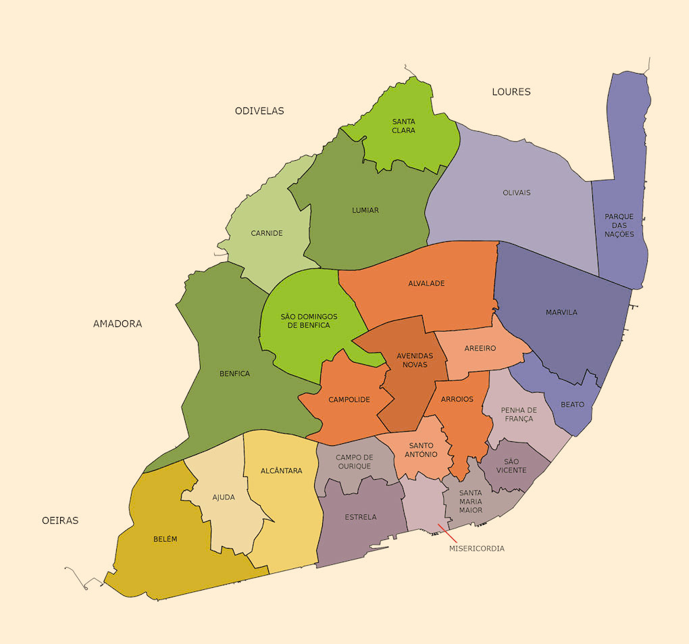

Lisszabon, Portugália fővárosa, lenyűgöző város, mely a Tejo folyó partján fekszik. A város gazdag történelmi örökséggel rendelkezik, melyet a királyi paloták, mint például a São Jorge vár, és a XVIII. századi Belém-torony képviselnek. A város varázsa azonban nem csupán a múltban, hanem a jelenben is megmutatkozik, például a modern Chiado negyedben található csillogó üzletek és kávézók révén. A híres 28-as villamos kanyargó útvonala végigviszi az ikonikus környékeket, mint az Alfama, ahol a szűk sikátorok, az égig érő kilátások és a Fado zene megtalálható. Lisszabon továbbá híres a kulturális eseményekről és a festői tengerpartokról, mint például a Cascais és a Sintra, melyek mindössze egy rövid kirándulásra vannak a várostól. Minden sarkon található valami érdekes, legyen az a híres Pasteis de Nata sütemények, az örökké nyüzsgő Bairro Alto vagy éppen a hajókirándulások a Tejo folyón. Lisszabon mindenképpen egy varázslatos hely, mely készen áll arra, hogy felfedezzük és megszeressük azt.
